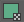
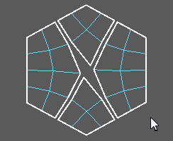
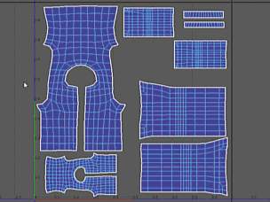
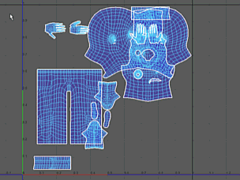

打开“UV 编辑器”(UV Editor)
- 选择
- 在“建模”(Modeling)菜单集中，选择“UV > UV 编辑器”(UV > UV Editor)
“UV 编辑器”(UV Editor)可用于查看 2D 视图内的多边形、NURBS 和细分曲面的 UV 纹理坐标，并以交互方式对其进行编辑。有关如何使用 UV 壳的详细信息，请参见以下相关主题。您还可以观看此视频，了解如何一起使用这些工具。

在“UV 编辑器”(UV Editor)中，可以通过“UV 编辑器”(UV Editor)的菜单、视图栏或“UV 工具包”(UV Toolkit)访问所有主要的 UV 任务。此外，可以在该编辑器的外部通过“建模”(Modeling)菜单集的“UV”菜单使用许多功能。您可以在下面找到 UV 工具包特性和功能的快速视频概述，后跟其各种命令和工具的详细描述。
UV 编辑器菜单
有关 UV 编辑器菜单项的列表，请参见 UV 编辑器菜单栏。
视图栏
视图栏包含用于在“UV 编辑器”(UV Editor)和（有时）“视口”(Viewport)中更改 UV 壳显示的选项。
 |
线框显示(Wireframe display)/着色显示(Shaded display) |
将 UV 壳显示为未着色的线框或使用半透明着色显示 UV 壳。彩色着色选项位于视图 > 着色(View > Shaded)中。 |
 |
扭曲着色器(Distortion Shader) |
通过使用挤压和拉伸的 UV 来着色面，确定拉伸或压缩区域。请参见识别 UV 扭曲。 |
| 纹理边界(Texture Borders) |
切换 UV 壳上纹理边界的显示。纹理边界显示有一条粗线。 |
|
| 彩色 UV 壳边界(Color UV Shell Borders) |
将彩色 UV 边界的显示切换为任何选定组件。用于查找壳共享相同边的位置。 |
|
|
“栅格 UV”(Grid UVs) |
将每个选定 UV 移动到纹理空间中其最近的栅格交点处。“UV > 栅格”(UV > Grid)的快捷方式。 若要更改栅格，请在工具栏上的“视图栅格”(View Grid)按钮上单击鼠标右键。 |
|
|
隔离选定 UV(Isolate selected UVs) |
仅显示选定 UV 或当前 UV 集中的 UV（如果未选择任何对象）。有关详细信息，请参见显示 UV 的子集。 |
|
 |
“保存图像”(Save image) |
将当前 UV 布局的图像保存到外部文件。 |
|
图像(Image) |
切换是否在“UV 编辑器”(UV Editor)中显示纹理。使用“棋盘格着色器”(Checker shader)按钮旁边的下拉列表在图像之间切换。 |
|
 |
棋盘格着色器(Checker shader) |
在 UV 编辑器中，将棋盘格图案纹理应用于 UV 网格的曲面和后面的 UV。请参见将棋盘格图案着色器应用到 UV 网格。 |
 / /
|
通道显示(Channel display) |
显示 RGBA 或 Alpha 通道。 |
|
暗淡图像(Dim Image) |
减小当前显示的背景图像的亮度。使用滑块可控制量。 “图像 > 暗淡”(Image > Dim)的快捷方式。 |
|
|
|
过滤的图像(Filtered Image) |
在硬件纹理过滤和明晰定义的像素之间切换背景图像。“图像 > 未过滤”(Image > Unfiltered)的快捷方式。 |
| 使用图像比(Use Image Ratio) |
在显示方形纹理空间与显示与该图像具有相同的宽高比的纹理空间之间进行切换。“图像 > 图像比”(Image > Image Ratio)的快捷方式。 |
|
|
|
像素捕捉(Pixel Snap) |
选择是否自动将 UV 捕捉到像素边界。“图像 > 像素捕捉”(Image > Pixel Snap)的快捷方式。 |
| UV 编辑器烘焙(UV Editor Baking) |
烘焙纹理，并将其存储在内存中。“图像 > UV 编辑器烘焙”(Image > UV Editor Baking)的快捷方式。 |
|
| “更新 PSD 网络”(Update PSD Networks) |
为场景刷新当前使用的 PSD 纹理。修改连接到 Maya PSD 节点（在 Maya 中）的 PSD 文件（在 Photoshop 中）时，可以在 Maya 中更新（刷新）图像以便立即显示修改。请参见“图像 > 更新 PSD 网络”(Image > Update PSD Networks)。 |
|
|
曝光(Exposure) |
调整显示亮度。通过减小曝光，可查看默认在高光下看不见的细节。 单击图标在默认值和修改值之间切换。 这是一个诊断选项，不保存在场景中，也不应用于渲染输出。 |
|
|
Gamma |
调整要显示的图像的对比度和中间调亮度。增加 Gamma 值，可查看图像阴影部分的细节。 单击图标在默认值和修改值之间切换。 这是一个诊断选项，不保存在场景中，也不应用于渲染输出。特别是，该选项在视图变换（如果有）之上应用，您无需将其设置为 2.2 以模拟 sRGB。 |
|

|
视图变换(View Transform) |
控制视图变换，将颜色从工作颜色空间进行转化以供显示。此选项非常有用，例如，如果要快速检查原始颜色值或临时应用其他视图变换，可以使用此选项。可以选择的可用颜色空间取决于您使用 OCIO 配置文件进行颜色管理还是已定义用户变换。
这些是诊断选项，不保存在场景中，也不应用于渲染输出。 除非已启用颜色管理，否则它们将不可用。请参见颜色管理。 |
UV 工具包
默认情况下，“UV 工具包”(UV Toolkit)显示在 UV 编辑器的右侧，并包含修改 UV 排列所需的全部工具。对于具有附加选项的工具和命令，可以按住 Shift 键并单击该按钮以打开相应的选项窗口。您也可以在某些选项上单击鼠标右键来访问替代功能。
- 选择遮罩(Selection masks) ()
- 将选择限制为“顶点”(Vertices)、“边”(Edges)、“面”(Faces)、“UV”(UVs)或“UV 壳”(UV Shells)。双击任意图标可选择在“UV 编辑器”(UV Editor)中加载的所有该类组件。在任意图标上单击鼠标右键可取消选择在“UV 编辑器”(UV Editor)中加载的所有该类组件。
- 选择方法(Selection method)
- 在拖动鼠标光标时切换选择方法。有关详细信息，请参见选择工具(Select Tool)。
如果“移动工具”(Move Tool)或“缩放工具”(Scale Tool)处于活动状态，您还可以选择通过拖动来变换组件。
- 对称(Symmetry)
- 激活对称选择。有关详细信息，请参见激活或取消激活对称。
您可以使用“镜像 UV”(Mirror UVs)按钮 () 跨所选对称轴快速镜像当前选择。有关详细信息，请参见对称 UV(Symmetrize UVs)。
- “选择约束”(Selection Constraint)
- 限制可以选择的组件。选项包括：
- 背面(Back-facing)/前面(Front-facing)：UV 缠绕顺序为逆时针或顺时针的组件。
- 几何体边界(Geometry Borders)：网格开口端上的组件。
- 纹理边界(Texture Borders)：UV 壳开口端上的组件。
- UV 循环边(UV Edge Loop)：（仅限“边选择”(Edge selection)模式）基于所单击边的整个 UV 循环边。
- UV 环形边(UV Edge Ring)：（仅限“边选择”(Edge selection)模式）基于所单击边的整个 UV 环形边。
- UV 壳(UV Shell)：基于所单击组件的整个 UV 壳。
- 变换约束(Transform Constraint)
- 移动(Move)、旋转(Rotate)或缩放工具(Scale Tool)可以临时激活此功能。
- 修改选择(Modify Selection)按钮
- 这些按钮可用于以不同的方式修改当前选择。
- 全部(All)：选择当前所有的组件类型。
- 清除(Clear)：清除当前选择。
- 反转(Inverse)：选择所有未选定的组件，反之亦然。
- ：沿相邻循环边移除或添加一个级别的组件。
- ：沿相邻面移除或添加一个级别的组件。
固定
- 固定(Pin)()
- 锁定选定 UV，使其无法移动。默认情况下，网格的固定区域显示为蓝色。
- 固定工具(Pin Tool) ()
- 用于在 UV 上绘制以将其锁定。按住 Shift 键并单击可打开固定 UV 工具(Pin UV Tool)选项。
- 反转固定(Invert Pinning)()
- 取消固定当前固定的 UV，反之亦然。
- 取消固定(Unpin)()
- 解除锁定所选 UV。
- 取消固定所有(Unpin All)()
- 解除锁定所有 UV。
按类型选择
使用以下选项可选择具有共同特点的所有 UV。
软选择(Soft Selection)
用于选择和影响当前选择周围渐变上的 UV 范围。有关详细信息，请参见选择工具(Select Tool)。
变换(Transform)
使用以下选项可比标准变换工具更精确地移动 UV。
枢轴(Pivot)
允许设置用于变换工具的自定义枢轴。有关详细信息，请参见更改枢轴点(Change the Pivot Point)。
- 枢轴(Pivot)
- 相对于当前“选择”(Selection)或“UV 区域”(UV Area)设置将枢轴移动到九个共用位置。
- 选择(Selection)
- 处于活动状态时，枢轴按钮将相对于当前选择移动枢轴。
- UV 区域(UV Area)
- 处于活动状态时，枢轴按钮将相对于由“U”和“V”字段指定的 UV 空间移动枢轴。
- 编辑枢轴(Edit Pivot)
- 单击此选项，然后移动操纵器以手动定位枢轴。还可以使用 “插入”(Insert) 键启用和禁用此选项。
- 重置(Reset)
- 将枢轴重置为其默认位置。
移动
允许以设置的增量平移选定 UV
- 移动方向(Move direction)
- 单击七个箭头按钮中的任何一个可在相应的方向上移动选定 UV。单击中间按钮以在相对于原来的位置移动组件与在 UV 空间中绝对地移动组件之间切换。
- 移动输入字段(Move input field)
- 位于“移动方向”(Move direction)中心，此项指定在按下移动按钮之一时选定 UV 将移动的增量。可以通过在值上单击鼠标右键将其保存供以后使用（保存的值在下拉列表中可用）。
- UV 输入字段(UV input fields)
- 显示/设置选定 UV 在 UV 空间中的确切位置。
- 步长捕捉(Step Snap)
- 允许将 UV 捕捉到特定的 UV 空间增量。
- 保留组件间距(Retain Component Spacing)
- 在移动时保持选定组件之间的相对距离。这在启用捕捉的情况下使用时尤其有用，因为如果不使用此选项，所有选定 UV 均会捕捉到同一位置（导致重叠）。
- 分布(Distribute)()
- 在 U 或 V 方向上均匀分布相邻的选定 UV。单击鼠标右键可按“移动输入字段”(Move input field)中的数值分布 UV。按住 Shift 键并单击可打开“分布 UV”(Distribute UVs)选项。
工具
包含各种工具，可帮助更有效地围绕 UV 空间移动 UV。
- 抓取(Grab) (
 )
) - 选择 UV 并在基于笔刷的区域中沿拖动方向移动 UV。对于进行精细调整很有用。按住 Shift 键并单击可打开“抓取 UV 工具”(Grab UV Tool)选项。
- 晶格(Lattice)()
- 借助 UV 晶格工具(UV Lattice Tool)，您可以通过围绕 UV 创建晶格（出于变形目的），将 UV 的布局作为组进行操纵。按住 Shift 键并单击可打开使用“UV 晶格工具”(UV Lattice Tool)修改 UV 选项。
- 收缩(Pinch) ()
- 向工具光标的中心拉近顶点。对于更明晰地定义现有折痕很有用。按住 Shift 键并单击可打开“收缩 UV 工具”(Pinch UV Tool)选项。
- 涂抹(Smear) ()
- 按与曲面上笔划方向的原始位置相切的方向移动 UV。按住 Shift 键并单击可打开“涂抹 UV 工具”(Smear UV Tool)选项。
- 对称(Symmetrize) ()
- 根据拓扑对称的对应项在所选轴上镜像绘制的 UV。按住 Shift 键并单击可打开“对称 UV 工具”(Symmetrize UV Tool)选项。
旋转(Rotate)
允许按设置的增量旋转选定 UV。
- 旋转输入字段(Rotate input field)
- 指定按下移动按钮之一时选定 UV 将旋转的增量。可以通过在值上单击鼠标右键将其保存供以后使用（保存的值在下拉列表中可用）。
- 逆时针旋转(Rotate Counterclockwise)/顺时针旋转(Rotate Clockwise) ()
- 单击相应的按钮可按在输入字段中指定的量旋转选定 UV。
- 步长捕捉(Step Snap)
- 允许将 UV 捕捉到特定的 UV 空间增量。这与旋转工具(Rotate Tool)中的“步长捕捉”(Step Snap)属性有关。
缩放(Scale)
允许按设置的增量缩放选定 UV。
- 缩放输入字段(Scale input field)
- 指定按下移动按钮之一时选定 UV 将缩放的增量。可以通过在值上单击鼠标右键将其保存供以后使用（保存的值在下拉列表中可用）。
- 缩放(Scale)()
- 单击此按钮可按在输入字段中指定的量缩放选定 UV。可以通过激活相应的按钮将缩放锁定到特定方向。
- 步长捕捉(Step Snap)
- 允许将 UV 捕捉到特定的 UV 空间增量。
- 防止负比例(Prevent Negative Scale)
- 启用后，Maya 会禁用 UV 的负缩放。沿每个轴的缩放限制为正值。
- 翻转(Flip) ()
- 在指定方向上翻转选定 UV 的位置。有关详细信息，请参见“翻转 UV”(Flip UV)选项。
Texel 密度(Texel Density)
- 获取(Get)
- 显示选定 UV 壳的当前 Texel 密度。
- 设置(Set)
- 缩放选定 UV 壳以适应指定的 Texel 密度。
- 贴图大小(Map Size)
- 指定整个纹理的方形贴图大小。首先设置此大小，因为它用于计算 Texel 密度基值。
创建
使用以下选项可为选定网格创建新的 UV 映射。
- 自动(Automatic)()
- 尝试通过自动投影多个平面查找最佳 UV 放置。按住 Shift 键并单击可打开“自动映射”(Automatic Mapping)选项。
- 基于法线(Normal-Based) ()
- 根据关联顶点的法线放置 UV。
- 圆柱形(Cylindrical) ()
- 通过从周围的圆柱体投影 UV 将其放置。按住 Shift 键并单击可打开“圆柱形映射”(Cylindrical Mapping)选项。
- 平面(Planar) ()
- 通过从平面投影 UV 将其放置。按住 Shift 键并单击可打开“平面映射”(Planar Mapping)选项。
- 球形(Spherical) ()
- 通过从周围的球体投影 UV 将其放置。按住 Shift 键并单击可打开“球形映射”(Spherical Mapping)选项。
- 最佳平面(Best Plane) ()
- 根据从指定顶点计算的平面，将 UV 指定给选择的面。
- 基于摄影机(Camera-Based) ()
- 等同于平面投影，但使用当前摄影机作为平面。按住 Shift 键并单击可打开基于摄影机的映射选项。
- 轮廓拉伸(Contour Stretch) ()
- 分析有四个角点的选择，确定如何以最佳方式在图像上拉伸多边形的 UV 坐标。按住 Shift 键并单击可打开“轮廓拉伸映射”(Contour Stretch Mapping)选项。
切割和缝合
使用以下选项可分离或接合 UV 壳。
- 自动接缝(Auto Seams) ()
- 尝试在选定网格或 UV 壳上查找要用作接缝的最佳边。按住 Shift 键并单击可打开“自动接缝”(Auto Seams)选项。
- 切割(Cut) ()
- 沿选定边分离 UV，从而创建边界。有关详细信息，请参见分离和附加 UV(Separate and attach UVs)。
- 切割工具(Cut Tool) (
 )
) - 允许通过在相邻边上单击 UV 将其分离。按住 Shift 键并单击可打开切割 UV 工具(Cut UV Tool)选项。

- 创建 UV 壳(Create UV Shell) ()
- 将连接到选定组件的所有面分离成一个新的 UV 壳。有关详细信息，请参见创建 UV 壳(Create UV Shells)。
- 创建壳(栅格)(Create Shell (Grid)) ()
- 通过沿当前选择的边周长切割，然后将 UV 均匀地分布到 0 到 1 的 UV 栅格空间，创建归一化的方形 UV 壳。
- 缝合(Sew) (
 )
) - 沿选定边界附加 UV，但不在编辑器视图中一起移动它们。按住 Shift 键并单击可打开分离和附加 UV(Separate and attach UVs)。
- 缝合工具(Sew Tool) ()
- 沿拖动的接缝焊接 UV。按住 Shift 键并单击可打开缝合 UV 工具(Sew UV Tool)选项。

- 缝合到一起(Stitch Together) ()
- 通过在指定方向上朝一个壳移动另一个壳，将两条选定边缝合在一起。

展开
使用以下选项可围绕接缝展开 UV。这特别适用于对称的有机对象。有关详细信息，请参见展开 UV 网格(Unfolding a UV mesh)。
- 优化(Optimize)()
- 自动移动 UV 以改善纹理空间分辨率。按住 Shift 键并单击可打开“优化 UV”(Optimize UVs)选项。
- 优化工具(Optimize Tool) (
 )
) - 通过在 UV 上拖动解开和松弛 UV 之间的间距。按住 Shift 键并单击可打开“优化 UV 工具”(Optimize UV Tool)选项。
- 展开(Unfold) ()
- 在尝试确保 UV 不重叠的同时，展开选定的 UV 网格。按住 Shift 键并单击可打开“展开 UV”(Unfold UVs)选项。
- 展开方向(Unfold Along) ()
- 旧版算法。
- 展开工具(Unfold Tool) ()
- 通过在重叠 UV 上拖动将其展开和消除。按住 Shift 键并单击可打开“展开 UV 工具”(Unfold UV Tool)选项。
- 拉直 UV(Straighten UVs) ()
- 对齐其边在特定角度容差内的相邻 UV。按住 Shift 键并单击可调整轴和角度容差以便拉直。有关详细信息，请参见拉直 UV(Straighten UVs)。
- 拉直壳(Straighten Shell) ()
- 尝试沿 UV 壳的边界/在 UV 壳的边界内解开所有 UV。若要正确使用该工具，必须选择一组包含到一个 UV 壳的内部或边界 UV（但不能同时选择两者）。使用内部 UV 时，它们还必须沿同一循环边。 在上述示例中，A 和 C 有效，因为它们包含所有边界或内部 UV 且全部沿同一循环边。相反，B 无效，因为它同时包含边界和内部 UV 以及两条不同的边循环，而 C 无效是因为 UV 跨多个 UV 壳。有关详细信息，请参见拉直 UV(Straighten UVs)。
对齐和捕捉
使用以下选项可定位 UV 并使其彼此对齐。
- 对齐(Align)()
- 对齐所有选定 UV，使其在指定方向上共面。对齐将在指定方向上相对于距离最远的选定 UV 进行。有关详细信息，请参见拉直 UV(Straighten UVs)。
- 线性对齐(Linear Align) ()
- 沿穿过所有选定 UV 的线性趋势线对齐这些 UV。
- 捕捉(Snap)
- 将选定 UV 壳移动到指定 UV 空间中的九个位置之一。
- 捕捉到一起(Snap Together) ()
- 通过使选定 UV 相互重叠，将一个 UV 壳移动到另一个 UV 壳。您可以通过相应的按钮选择捕捉方向（按选择顺序）。
- 捕捉和堆叠(Snap & Stack) ()
- 通过使选定 UV 相互重叠，将多个 UV 壳移动到另一个 UV 壳之上。壳始终朝最后一个选定 UV 移动。
- 匹配栅格(Match Grid) (
 )
) -
将每个选定 UV 移动到 UV 空间中其最近的栅格交点处。按住 Shift 键并单击可打开“栅格 UV”(Grid UVs)选项。
- 匹配 UV(Match UVs) ()
-
将特定容差距离内的选定 UV 移动到所有各个位置的平均位置。按住 Shift 键并单击可调整“容差”(Tolerance)。
还可以选择多个壳以匹配其中的 UV。如果您有两个彼此堆叠的几乎相同的壳，而您希望使其完全相同，这将非常有用。 - 归一化(Normalize) ()
-
缩放选定 UV 以适配 0 到 1 的 UV 空间。单击鼠标右键可缩放 UV，使其所有面填充 0 到 1 的 UV 空间。按住 Shift 键并单击可打开“归一化 UV”(Normalize UVs)选项。
排列和布局
使用以下选项可定位 UV 并使其彼此对齐。
- 分布(Distribute)
- 在所选方向上分布（请参见上文）选定 UV 壳，同时确保 UV 壳之间相隔一定数量的单位。您也可以使用“目标”(Target)按钮沿上一个选定壳（即：目标壳）的方向均匀分布它们。
- 定向壳(Orient Shells) ()
- 旋转选定 UV 壳，使其与最近的相邻 U 或 V 轴平行。
- 定向到边(Orient to Edges) ()
- 旋转选定 UV 壳，使其与选定边平行。
- 堆叠壳(Stack Shells) ()
- 将所有选定 UV 壳移动到 UV 空间的中心，使其重叠。

- 取消堆叠壳(Unstack Shells) ()
- 移动所有选定 UV 壳，使其不再重叠且相互靠近。按住 Shift 键并单击可打开“取消堆叠选项”(Unstack Options)，允许您翻转已反转的 UV 壳。
- 堆叠和定向(Stack & Orient) ()
- 将选定 UV 壳堆叠到 UV 空间的中心，然后旋转，使其与最近的相邻 U 或 V 轴平行。
- 堆叠类似(Stack Similar) ()
- 仅将拓扑类似的壳彼此堆叠。按住 Shift 键并单击可打开“堆叠类似”(Stack Similar)选项。

- 容差(Tolerance)
- 确定两个壳的拓扑必须匹配至何种程度才能进行堆叠。
- 选择堆叠壳(Select Stacked Shells)
- 选择在“堆叠类似”(Stack Similar)操作完成后已堆叠的所有壳。
- 聚集壳(Gather Shells) ()
- 将选定 UV 壳移回到 0 到 1 的 UV 范围。
注： 为了保持 UV 布局，壳将以 1.0 个单位为步长偏移。因此，在“聚集”(Gather)操作之后，壳可能跨越 0-1 UV 空间的边界。
- 随机化壳(Randomize Shells) ()
- 随机化 UV 壳平移、旋转和缩放。您可以通过“随机化壳选项”(Randomize Shells options)窗口（按住 Shift 键并单击）调整各个方向和允许的最大平移、旋转、缩放量。
- 测量(Measure) ()
- 显示两个选定 UV 的所选度量。选项包括：
- “U 距离”(U Distance)：U 轴方向上 UV 之间的单位数。
- “V 距离”(V Distance)：V 轴方向上 UV 之间的单位数。
- “像素距离”(Pixel Distance)：打开一个窗口，其中基于许多可能的不同贴图大小显示各方向上两个最远 UV 之间的像素数量。
- “夹角”(Angle Between)：两个选定 UV 之间的角度（选择多个 UV 将产生不一致的结果）。
- 排布(Layout) (
 )
) - 自动排列 UV 壳以最大限度地使用 0 到 1 的 UV 空间。按住 Shift 键并单击可打开“排布 UV”(Layout UVs)选项。

- 排布方向(Layout Along) ()
- 自动排列 UV 壳以最大限度地使用指定方向上的 UV 空间。
UV 集
可用于为场景中的对象创建和控制 UV 集(UV sets)。有关详细信息，请参见“UV 集”(UV Sets)菜单。
- 创建空 UV 集(Create empty UV set) ()
- 在当前对象上创建一个新的空 UV 集。然后可以使用其中一种映射/投影方法在集中创建 UV。还可以通过在“UV 集”(UV Set)列表上单击鼠标右键来访问此命令。
- 将 UV 复制到剪贴板(Copy UVs to clipboard) ()
- 将当前 UV 布局复制到剪贴板
- 将剪贴板中的 UV 粘贴到当前 UV 集(Paste UVs from clipboard to current UV set) ()
- 将剪贴板中的 UV 布局粘贴到选定 UV 集。
- 复制 UV 集(Duplicate UV set) ()
- 创建选定 UV 集的相同副本。
- 传播 UV 集(Propagate UV set) ()
- 将“UV 集”(UV Set)列表中的选定 UV 集指定给场景中的选定对象。选定的 UV 集成为那些对象的活动 UV 集。
- UV 集(UV Set)列表
- 可用于控制选定对象后将显示哪个 UV 集。若要显示特定的 UV 集，请在左列中选择其所属的对象，然后在右列中选择特定的 UV 集。
通过在右列中的 UV 集名称上单击鼠标右键，可以选择在列表中更改其位置，将 UV 复制到另一个集，复制或删除该集，或者生成该集的 UV 快照(UV Snapshot)。注： Maya 将不允许您删除“UV 集”(UV Set)列表中的最上方条目。如果需要删除此条目，可以将其移至列表中更低的位置，然后将其删除。
- 共享实例(Share instances) ()
- 选择要共享的多边形，后跟要共享的实例。
- 选择共享实例(Select shared instances) ()
- 选择与选定实例共享 UV 集系列的实例。
- 打开关系编辑器(Open Relationship Editor) ()
- 在“UV 链接”(UV Linking)模式下打开关系编辑器(Relationship Editor)。
- 自动加载纹理(Auto-load Textures) ()
- 加载选定 UV 集的链接纹理。
- “保存图像文件”(Save image file) ()
- 导出选定 UV 集的 UV 快照(UV Snapshot)。